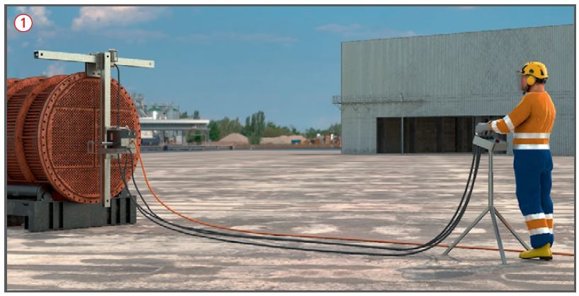
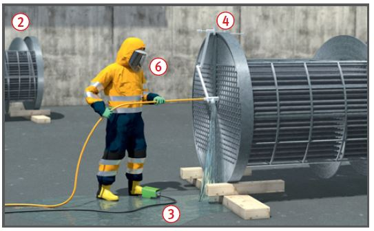

Gefährdungen
- Die Schneidwirkung des Hochdruckstrahles
kann zu schweren
Verletzungen führen und die
Injektion von Strahlflüssigkeit
kann schwere Infektionen auslösen.
Allgemeines
- Vor dem Einsatz einer handgehaltenen Spritzeinrichtung
 (z. B. Strahlpistole, Strahllanze) prüfen, ob die Nutzung einer handgehaltenen Spritzeinrichtung aus technischen Gründen zwingend erforderlich ist oder ob durch den Einsatz mechanisch geführter Spritzeinrichtungen
(z. B. Strahlpistole, Strahllanze) prüfen, ob die Nutzung einer handgehaltenen Spritzeinrichtung aus technischen Gründen zwingend erforderlich ist oder ob durch den Einsatz mechanisch geführter Spritzeinrichtungen  (automatische oder halbautomatische Systeme), die Gefährdung verringert werden kann.
(automatische oder halbautomatische Systeme), die Gefährdung verringert werden kann.
- Vor jeder Inbetriebnahme sind
Spritzpistole, Schlauchleitungen
und Sicherheitseinrichtungen,
z. B. Druck- und Temperaturanzeige,
auf augenscheinliche
Mängel zu überprüfen.
- Vor Einsatz prüfen, ob die austretende
Flüssigkeit mit Produktresten auf gefährliche Weise
reagieren kann, gegebenenfalls
Schutzmaßnahmen treffen.
- Elektrisch betriebene Hochdruck-Reinigungsgeräte nur über
besonderen Speisepunkt anschließen,
z. B. Baustromverteiler mit Fehlerstrom-Schutzeinrichtung.
- Bei Geräten mit Pumpenwechselsätzen darauf achten, dass Schlauchleitungen und Spritzeinrichtungen dem zulässigen Betriebsüberdruck des jeweiligen Pumpensatzes entsprechen.
Schutzmaßnahmen
Schlauchleitungen
- Nur einwandfreie Schlauchleitungen und Spritzeinrichtungen
verwenden, die auf Grund
ihrer Kennzeichnung für den zulässigen Betriebsüberdruck des
Druckerzeugers ausgelegt sind.
- Schlauchleitungen, deren Außenschicht bis auf die äußere Drahtschicht beschädigt wurde, außer Betrieb setzen.
- Verbindungselemente von Hochdruckschläuchen wenn erforderlich mit Sicherheitseinrichtungen (z. B. Schlauchsicherungsstrumpf, Stahlseil) sichern (Herstellerangaben beachten).
- Schlauchleitungen nur vom
Fachpersonal, z. B. Hersteller
oder Lieferer, einbinden und
durch befähigte Person prüfen
lassen.
- Bei Betriebstemperaturen
über 70 °C muss an Schläuchen
die max. zulässige Betriebstemperatur
angegeben sein.
Betrieb
- Größe und Anordnung der
Düsen in den Spritzeinrichtungen
gemäß Herstelleranweisung aufeinander
abstimmen.
- Übersteigt die Rückstoßkraft
150 N, eine Körperstütze verwenden,
durch die die Rückstoßkräfte ganz oder teilweise auf
den Körper übertragen werden.

- Die maximale Rückstoßkraft
darf 250 N nicht überschreiten.
- Beim Einsatz handgehaltener Spritzeinrichtungen mit weniger als 75 cm Länge (Abstand Betätigungseinrichtung zur Düse), muss die Betätigungseinrichtung als Zweihandschaltung ausgebildet sein (bei maximal zul. Betriebsdruck > 350 bar).
- Schlauchleitungen nicht einklemmen,
über scharfe Kanten
führen, mit Fahrzeugen überfahren. Schlingenbildung, Zug- oder
Biegebeanspruchung und
Scheuerstellen vermeiden.
- Geräte nicht mit der Schlauchleitung ziehen.
- Abzughebel der Spritzpistole
oder Fußschalter
 der Spritzeinrichtung
während des Betriebes
nicht festsetzen.
der Spritzeinrichtung
während des Betriebes
nicht festsetzen.
- Bei Rohr- und Wärmetauscherreinigung
Rückhaltevorrichtung
 einsetzen.
einsetzen.
- Gegenseitige Gefährdung bei
gleichzeitigem Betrieb mehrerer
Spritzeinrichtungen vermeiden.
- Nicht von Leitern aus mit
Hochdruck-Spritzeinrichtungen
arbeiten, sondern z. B. von
Gerüsten
 .
.
- Hochdruckstrahl nie auf
Personen richten.
- Bei Arbeitsunterbrechung
Spritzeinrichtung gegen unbeabsichtigtes
Einschalten sichern.
- Vor Düsenwechsel, Wartungs- und
Instandsetzungsarbeiten
sowie nach Beendigung der
Arbeiten Gerät ausschalten,
Wasserzufuhr absperren und
System drucklos machen, z. B.
Abzugshebel der Spritzpistole
betätigen.
- Für das Arbeitsverfahren geeignete
persönliche Schutzausrüstung
auswählen, bereitstellen
und benutzen, z. B. Hose, Handschuhe,
Kopf- und Gesichtsschutz,
ggf. auch Atemschutz
 .
.
- Entsprechend der Gefährdungsbeurteilung
ist für den
Nassbereich beim Einsatz von
Geräten bis max. 250 bar Fußschutz
z. B. Polymerstiefel S5
und Nässeschutzkleidung geeignet.
Ist die Lanzenlänge kleiner
als 75 cm oder werden Geräte
mit mehr als 250 bar eingesetzt,
sind entsprechend der Gefährdungsbeurteilung
Stiefel (Fußschutz
mit speziellem Schutz vor
dem Hochdruckwasserstrahl)
oder Stiefel mit speziell geeigneten Gamaschen und geeignete
Schutzkleidung notwendig.

Zusätzliche Hinweise für
Hochdruckreiniger mit
ölbefeuertem Erhitzer
- Abgaswerte regelmäßig vom
Schornsteinfeger überprüfen
lassen. Prüfergebnisse beim
Gerät belassen.
- Einsatz nicht in geschlossenen
Räumen, z. B. Tiefgaragen (Vergiftungsgefahr).
- Auf ausreichende Lüftung
achten.
Prüfungen
- Art, Umfang und Fristen erforderlicher
Prüfungen festlegen
(Gefährdungsbeurteilung) und
einhalten, z. B.:
- nach einer Betriebsunterbrechung
von mehr als 6 Monaten,
- vor Inbetriebnahme und mindestens
1 x jährlich durch eine
"zur Prüfung befähigte Person"
(z. B. Sachkundiger).
- Ergebnisse dokumentieren.
Arbeitsmedizinische Vorsorge
- Arbeitsmedizinische Vorsorge nach Ergebnis der Gefährdungsbeurteilung veranlassen (Pflichtvorsorge) oder anbieten (Angebotsvorsorge). Hierzu Beratung durch den Betriebsarzt.
Beschäftigungsbeschränkungen
- Jugendliche unter 15 Jahre dürfen nicht an den Maschinen beschäftigt werden.
- Jugendliche über 15 Jahre dürfen nur unter Aufsicht eines Fachkundigen und wenn es die Berufsausbildung erfordert, mit Hochdruckreinigungsgeräten arbeiten.
07/2021